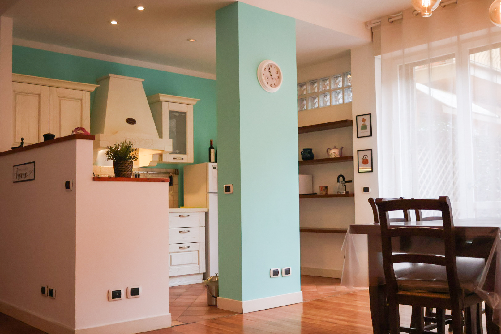
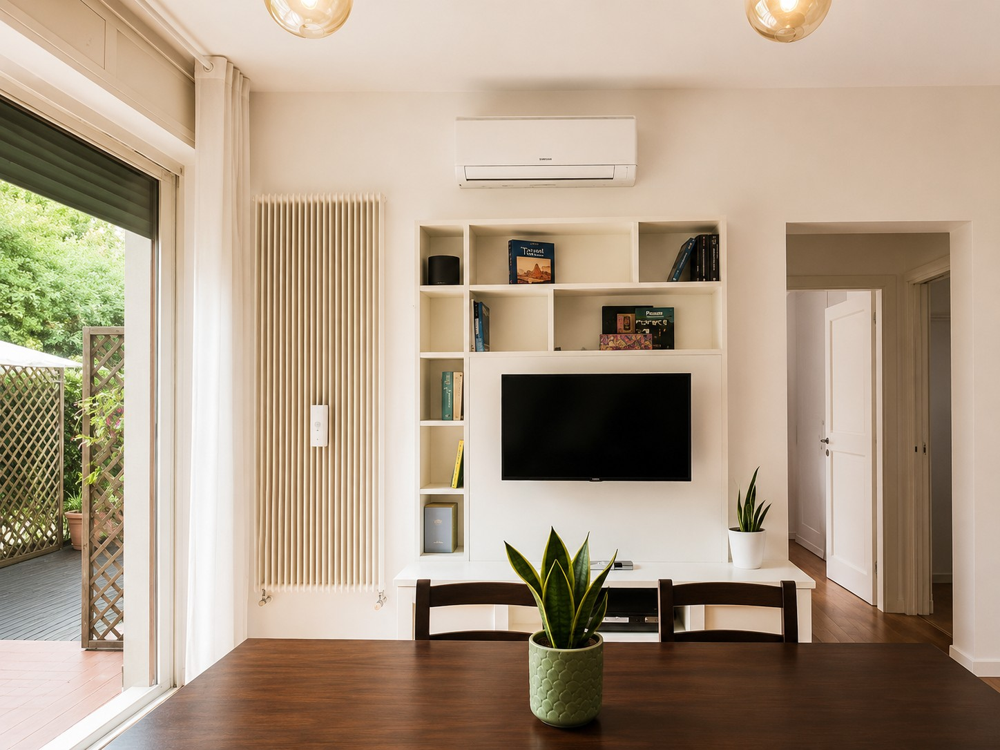
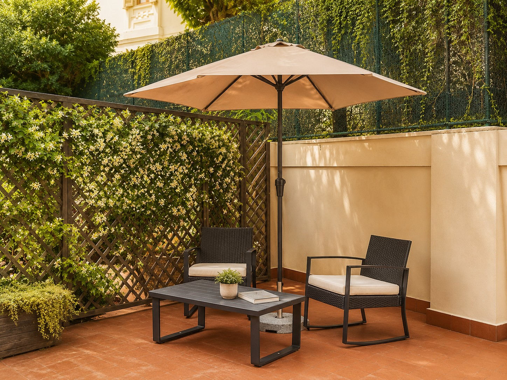

Spazio esterno privato
Un ampio piazzale dove rilassarsi, mangiare fuori o godersi momenti di quiete.
Appartamento a Firenze · Piazza Beccaria
Serendipity è una casa vera, accogliente e silenziosa: uno spazio dove rilassarsi, lavorare bene e vivere Firenze con il passo lento di chi vuole sentirsi a casa.
Vedi disponibilità su AirbnbLa casa
Serendipity è pensato per chi cerca Firenze, ma anche pace. L’appartamento si trova in una zona comoda, fuori dal caos del centro storico ma abbastanza vicina da poterlo raggiungere a piedi.
Il grande spazio esterno è il suo punto speciale: un luogo dove fare colazione, leggere, lavorare, cenare o semplicemente staccare dopo una giornata in città.

Comfort
Non solo un alloggio per dormire: una casa completa, curata e funzionale, adatta sia a una vacanza lenta sia a un soggiorno di lavoro.

Un ampio piazzale dove rilassarsi, mangiare fuori o godersi momenti di quiete.
Cucina attrezzata, ambienti comodi e tutto il necessario per un soggiorno pratico.
Connessione stabile, ideale anche per smart working, videochiamate e lavoro da remoto.
Ambienti accoglienti e confortevoli per riposare bene in ogni stagione.
Vicino a Piazza Beccaria, con il centro raggiungibile a piedi senza rinunciare alla calma.
Un luogo riservato dove rallentare davvero, lontano dal rumore del turismo più frenetico.
Relax o lavoro
C’è chi arriva a Firenze per camminare tutto il giorno. E c’è chi vuole anche fermarsi, respirare, lavorare con calma, leggere, cucinare, cenare all’aperto.
Serendipity è ideale per chi cerca una base tranquilla: vicino alla città, ma abbastanza appartato da diventare un piccolo rifugio.

Firenze
Serendipity si trova vicino a Piazza Beccaria, in una zona comoda e tranquilla da cui raggiungere facilmente il centro storico, Santa Croce, Sant’Ambrogio, i Lungarni e le colline fiorentine.
È il posto giusto per chi vuole vivere Firenze con calma: arte, passeggiate, buon cibo e poi il piacere di tornare in una casa accogliente, lontana dal caos più frenetico.
Santa Croce, il centro storico, gallerie, chiese e palazzi: da Serendipity puoi raggiungere facilmente il cuore artistico di Firenze.
I Lungarni, le colline, i giardini e le passeggiate panoramiche offrono momenti di quiete a pochi passi dalla città più intensa.
Tra Sant’Ambrogio, trattorie, botteghe e locali di quartiere, Firenze si scopre anche a tavola, con calma e autenticità.
Recensioni
Serendipity è pronta ad accogliere i suoi ospiti. A breve raccoglieremo qui le esperienze di chi avrà vissuto la casa e Firenze.
Prenotazione
Scopri disponibilità, prezzi aggiornati e dettagli del soggiorno direttamente sulla pagina Airbnb ufficiale di Serendipity.